Module 4—Properties of Solutions
 Self-Check Answers
Self-Check Answers
SC 8.
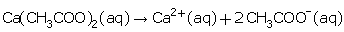
Species |
Ca(CH3COO)2 (aq) |
Ca2+(aq) |
CH3COO–(aq) |
Coefficient |
1 |
1 |
2 |
Concentration |
0.81 mol/L |
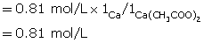 |
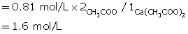 |
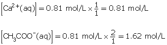
SC 9.
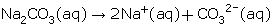
Species |
Na2CO3 (aq) |
Na+(aq) |
CO32+(aq) |
Coefficient |
1 |
2 |
1 |
Concentration |
0.65 mol/L |
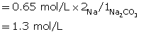 |
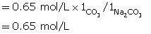 |
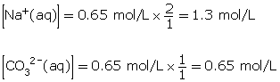
SC 10.
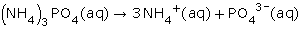
Species |
(NH4)3PO4 (aq) |
NH4+(aq) |
PO43–(aq) |
Coefficient |
1 |
3 |
1 |
Concentration |
1.15 mol/L |
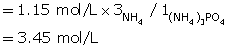 |
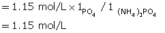 |
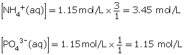
SC 11.
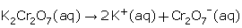
Since concentration is not given, use the mass and volume to determine the amount concentration of the solute.
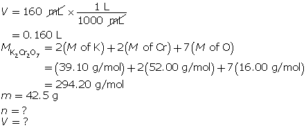
Determine the number of moles of potassium dichromate.
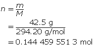
Determine the amount concentration of potassium dichromate.

Now, use ratios to determine the concentration of the potassium and chromate ions.
Species |
K2Cr2O7 (aq) |
K+(aq) |
Cr2O72–(aq) |
Coefficient |
1 |
2 |
1 |
Concentration |
0.903 mol/L |
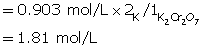 |
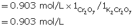 |
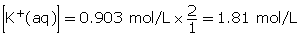
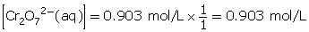
SC 12.
Species |
AlCl3(aq) |
Al3+(aq) |
Cl–(aq) |
Coefficient |
1 |
1 |
3 |
Concentration |
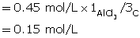 |
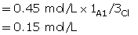 |
= 0.45 mol/L |
Use the information to determine mass of solute.
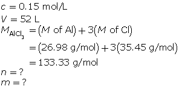
Determine the number of moles of aluminium chloride solution.
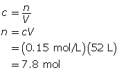
Now, determine the mass of aluminum chloride that must be dissolved.
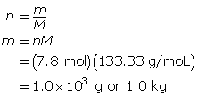
To make the desired solution, 1.0 kg of aluminium chloride must be dissolved.